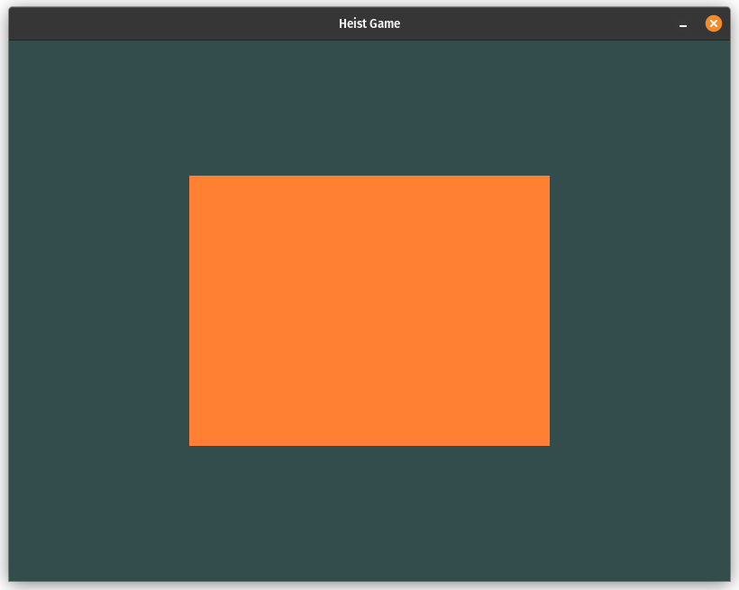
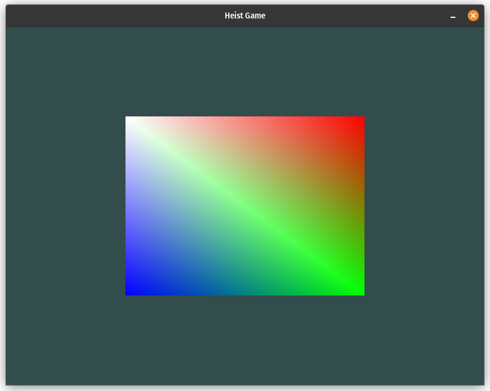
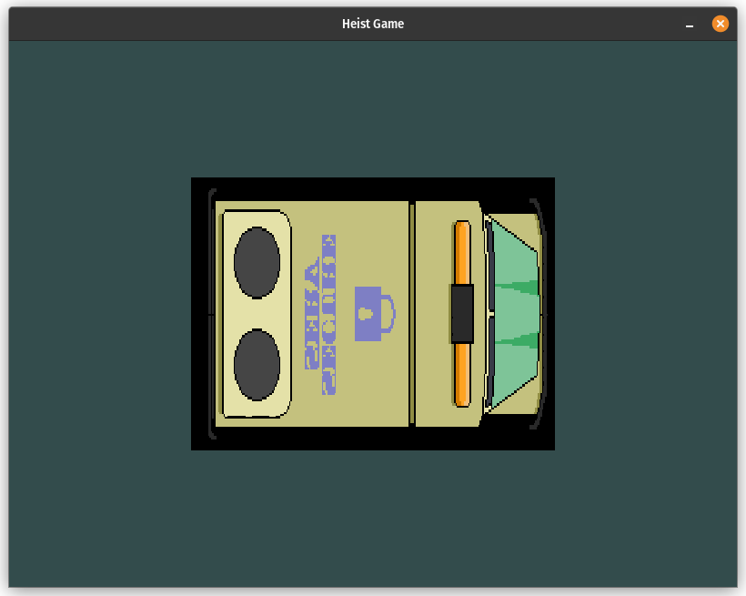
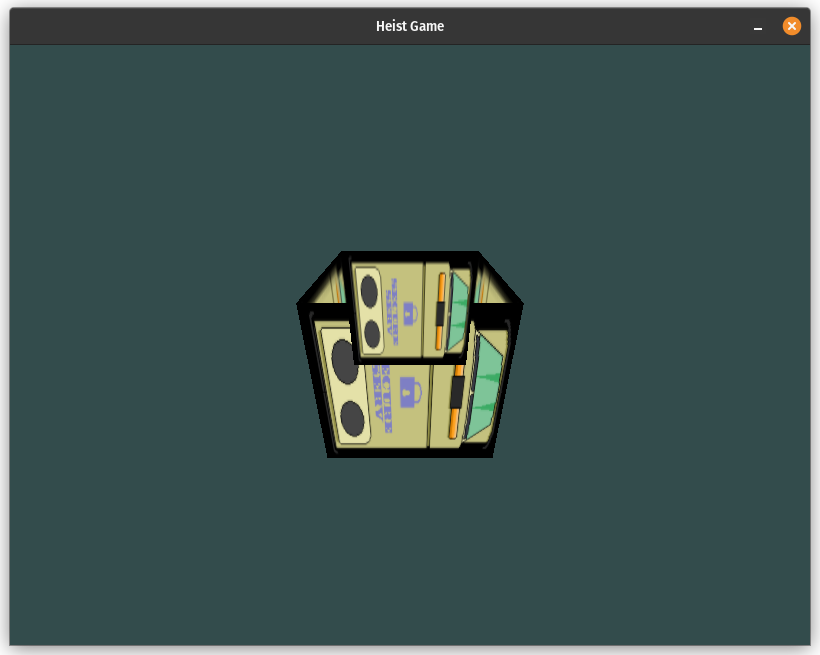

Week 0x00
Day 0x00. Drawing Triangles.
OpenGL is a library for creating three-dimensional graphics. I used it a long time ago, and I haven't done anything particularly interesting. Therefore, it can be considered that I am starting my journey from scratch.
I remember that there are two main modes in OpenGL: the old one, called immediate mode, and the new core-profile mode. In modern development, it's advised not to use immediate mode because it is slow, outdated, and removed from the latest versions of OpenGL. However, it is simpler and easier to start drawing with. On the other hand, core-profile mode works faster, is closer to the hardware, and therefore more complex.
Without any doubt, I decided to use the core-profile mode. Many posts and blogs on the Internet refer to the site learnopengl.com as the best resource for learning modern OpenGL, so I started with it.
The first lessons explain the basic foundation and principles of how OpenGL works from a high-level perspective, and also describe how to install the necessary libraries to start programming. I didn't encounter any particular problems with this since I already have extensive experience programming in C and understand the basic principles. As a result, I managed to render a simple window.
I quickly moved on to the "Hello Triangle" lesson, which describes how to draw a triangle. At this point, I had to pay close attention. The lesson explained everything: the structure of the rendering pipeline, the coordinate system, vertex buffers, shaders, and so on. And all of this just to draw one simple triangle!
Initially, the triangle simply refused to appear on the screen. But I quickly realized that the reason was that I had changed the function's prototype to return a buffer index instead of setting it via a pointer in the parameter. In other words, I originally wrote the function as:
and called it like this:
Later, I changed the prototype to:
but didn't change the call:
The C compiler doesn't forbid passing parameters to functions with an empty parameter list and doesn't produce an error. Therefore, the correct declaration should have been:
After all the corrections, the triangle finally appeared. After that, the lesson shows how to draw a rectangle from two triangles using an element buffer object. There were no issues with that part:
I must admit, it wasn't easy, but I'm glad that everything worked out!
Day 0x01. Shaders.
I've read the "Shaders" lesson. It explains GLSL, the programming language for shaders, and then guides through simple vertex and fragment shader implementations. It shows how to compile and link shader program. After that, the lesson introduces the concept of uniforms, which allow an application to pass data to shader programs in real time. For example, here I used a uniform to dynamically change the color of the rectangle:
Next, the lesson demonstrates fragment interpolation and provides additional information on vertex attributes. This knowledge enabled me to add this beautiful gradient effect:
Finally, the lesson suggested creating your own shader class. I don't personally like the idea of a single property encapsulation, and since I use C — a language that doesn't suppor served as a great refresht classes — I implemented just a couple of functions that read shader source files and compile them into a shader program.
Day 0x02. Textures.
I've completed the "Textures" lesson and successfully drawn a texture on my rectangle:
I've also learned more about texture coordinates, texture wrapping and filtering, mipmaps, and using textures in shaders.
Day 0x03. Trasformations.
I've read the "Transformations" lesson and refreshed my linear algebra knowledge. The aricle covers the essentials of vectors, matrices, and their operations, and then maps these mathematical concepts to real-world transformations such as scaling, translating, and rotating objects. Later, the lesson demonstrates how to implement matrix transformations using the glm library. Since glm is designed for C++ and I use C, I picked the cglm library for my implementation:
Day 0x04. Coordinate Spaces.
I've got acquainted myself with the "Coordinate Systems" article. It explains what coordinate spaces are and how to transform vertices from one space to another. Essentially, each vertex goes through the following spaces:
- Local space
- World space (via the Model matrix)
- View space (via the View matrix)
- Clip space (via the Projection matrix)
- Screen space (via the internal Viewport transform)
The article then teaches two kinds of projection matrices: perspective and orthographic. Finally, it shows how coordinate spaces work in practice.
I've implemented all three kinds of matrices using the acquired knowledge and drawn the rectangle in perspective, slightly rotated:
In the end, I tried to turn the rectangle into a cube, but it went not so well. This happened because OpenGL doesn't enable z-buffer checking by default:
These two simple lines fixed the problem:
Day 0x05. Things get interesing.
I've skimmed through the "Camera" chapter since it mainly talks about 3D concepts but I can't wait already to start my own 2D game. Instead, I've decided to peek in "In Practice" chapters and adapt something from them in my game.